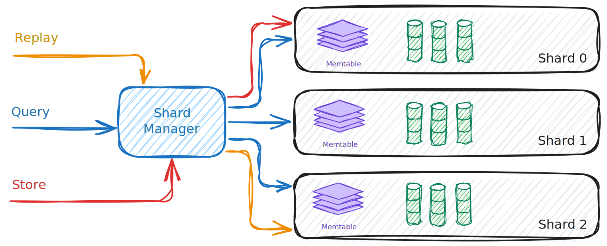

Sharding
What it is
Sharding is how SnelDB scales ingestion and keeps per-context replay efficient. Instead of one big pipeline, the system runs multiple shard workers side by side. Each context_id is deterministically mapped to a shard, so all events for that context live together.
Core pieces
- Shard Manager — owns all shards and routes work to them by hashing
context_id. - Shard (worker) — long‑lived task that owns a WAL, active/passive MemTables, a flush queue, and the shard’s segment list. Processes Store, Query, Replay, and Flush messages.
- Messages — typed messages delivered to each shard: Store, Query, Replay, Flush.
- Backpressure — each shard has a bounded mailbox; when it fills, senders wait. Hot shards slow down independently without affecting others.

How it works
-
Startup
- The manager creates
Nshards (configurable) and starts one worker per shard. - Each shard ensures its storage directories exist, recovers its MemTable from its WAL, loads existing segment IDs, and starts background services (flush, compaction).
- The manager creates
-
Store
- Hash
context_id→ pick shard → send Store. - The shard appends to its WAL, updates the in‑memory MemTable, and, when the MemTable reaches its threshold, rotates it to a passive buffer and enqueues a flush.
- Hash
-
Query
- Broadcast to all shards. Each shard scans its in‑memory state and on‑disk segments and returns matches. Results are merged.
-
Replay
- Single‑shard. The manager routes to the shard that owns the
context_id. The shard streams events in order for that context.
- Single‑shard. The manager routes to the shard that owns the
-
Flush
- Manual
Flushis broadcast to all shards. Each shard rotates its active MemTable and enqueues a flush to create a new segment. - Automatic flush also occurs when a shard’s MemTable reaches its configured threshold during ingestion.
- Manual
Why this design
- Locality: all events for a
context_idstay on one shard → fast, single‑shard replay. - Parallelism: shards work independently → ingestion and queries scale with cores.
- Isolation: hot shards apply backpressure locally without stalling the whole system.
- Simplicity: shards don’t coordinate directly; only query results are merged.
Invariants
- Same
context_id→ always the same shard. - Within a shard, event order per
context_idis preserved. - Shards never share mutable state; cross‑shard communication happens via message passing and result merging.
Operational notes
- Number of shards controls parallelism; increase to utilize more CPU cores.
- Flush threshold tunes memory usage vs. write amplification; lower values flush more often.
- On startup, shards recover from their WALs before serving traffic; compaction runs in the background to control segment growth.
Further Reading
- A deep dive into WAL or flush internals (see Storage Engine).
- Query planning details (see Query & Replay).
- Compaction policies (see Compaction).
Sharding is the concurrency backbone: it divides the work, keeps replay cheap, and prevents overload by applying backpressure shard by shard.